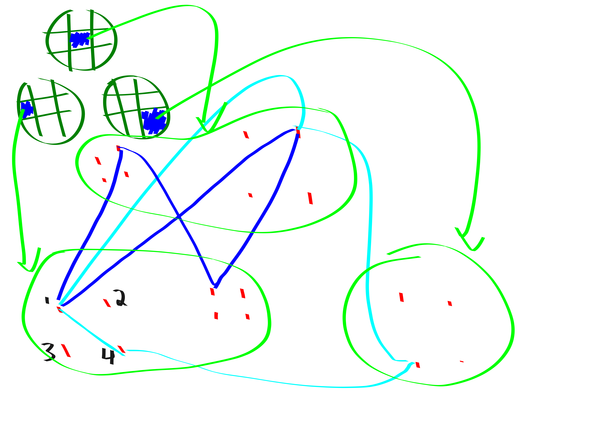

Work in progress
In this blog post I summarize “Stronger 3-SUM Lower Bounds for Approximate Distance Oracles via Additive Combinatorics” by Abboud Bringmann and Fischer and also discuss the very similar “Removing Additive Structure in 3sum based reductions” by Jin and Xu. I will present the results “backwards”, because I think this makes the motivation clear. In particular, I will present the results in the following order:
- Reduction from “sparse all-edges triangle” to \(C_4\)-enumeration.
- Reduction from 3SUM instance with \(n^{2+\delta}\) additive energy to sparse all-edges triangle.
- Reduction from 3SUM instance with \(O(n^{3-\varepsilon})\) additive energy to 3SUM instance with \(n^{2+\delta}\) additive energy.
- Reduction from 3SUM instance with \(\Theta(n^{3})\) additive energy to 3SUM with \(n^{3-\varepsilon}\) additive energy.
Before giving the proofs, it will be helpful to state all the results.
Remark. The 3SUM problem is, given a list of numbers, are there any \(3\) summing to \(0\)? The 3SUM conjecture states that there is no \(n^{2-\varepsilon}\) algorithm for 3SUM.
Theorem. 3SUM is “just as hard” when restricted to sets with additive energy \(n^{2.9999}\).
Theorem. 3SUM is “just as hard” when restricted to sets with \(n^{2.0001}\) additive energy.
Theorem. Fix \(\varepsilon>0, k_{\max}\ge 3\). The sparse all-edges triangle problem is, given an \(n\)-vertex graph \(G\) where all vertices have degrees in \(\Theta(\sqrt{n})\) and where \(G\) has at most \(O(n^{k/2})\) \(k\)-cycles for each \(k\in [3,k_{\max}]\) for each edge determine whether the edge is part of a triangle. Under the 3SUM conjecture there is no \(O(n^{2-\varepsilon})\)-time algorithm for sparse all-edges triangle.
Theorem. Assuming the 3SUM conjecture, there is no \(C_4\) enumeration algorithm in time \(\widetilde{O}(n^{2-\varepsilon}+t)\) or \(\widetilde{O}(m^{4/3-\varepsilon}+t)\) where \(t\) is the number of \(C_4\)’s.
\(C_4\) enumeration
In this section we reduce sparse all-edges triangle to \(C_4\)-enumeration.
Proof. Assume that we have a \(C_4\) enumeration algorithm with running time \(\widetilde{O}(n^{2-\varepsilon}+t)\) (where \(t\) is the number of \(C_4\)’s).
Randomly partition the vertex set into \(s=n^{\varepsilon/4}\) parts: \(V=V_1\sqcup V_2 \sqcup \cdots \sqcup V_s\). For each tripple \(i,j,k \in [s]^{3}\), we make a graph \(G_{ijk}\). In \(G_{ijk}\) we make 4 copies \(v_1,v_2,v_3,v_4\) of each vertex \(v\in V_i\sqcup V_j \sqcup V_k\). We add the following edges:
- \(\{v_1, w_2\}\) if \(\{v,w\}\in E(G)\)
- \(\{v_2, w_3\}\) if \(\{v,w\}\in E(G)\)
- \(\{v_3, w_4\}\) if \(\{v,w\}\in E(G)\)
- \(\{v_1,v_4\}\)
Claim 1: Each triangle in \(G[V_i\sqcup V_j \sqcup V_k]\) becomes a \(C_4\) in \(G_{ijk}\).
Claim 2: Each \(C_4\) in \(G_{ijk}\) either corresponds to a \(C_4\) in \(G[V_i\sqcup V_j \sqcup V_k]\) or a \(C_3\) in \(G[V_i\sqcup V_j \sqcup V_k]\). And each \(C_4,C_3\) in \(G\) generates \(O(1)\) \(C_4\)’s in \(G_{ijk}\)’s.
Proof by picture of Claims 1 and 2: 
Claim 3: Thus, the number of \(C_4\)’s across all \(G_{ijk}\) is at most \(O(n^{2}/s + n^{3/2})\). proof: Each \(C_4\) from \(G\) survives the slicing with probability \(1/s^{4}\). Thus, the expected number of survivors is \(ts^{3}/s^{4}\) (where \(t\) is number of \(C_4\)’s). By assumption there are at most \(O(n^{2})\) \(C_4\)’s in \(G\) so this is bounded by \(O(n^{2}/s)\).
The number of triangles in \(G\) is \(O(n^{3/2})\).
Adding these up gives the desired bound.
claim 4: Algo run time is \(O(n^{2-\varepsilon/4})\). The run time is bounded by \[\sum_{ijk\in [s^{3}]} n^{2-\varepsilon}+t_{ijk} \le n^{2-\varepsilon+(3/4)\varepsilon} + n^{2-\varepsilon/4} \le \widetilde{O}(n^{2-\varepsilon/4}).\]
This same computation would show that you’re toasted if you were assuming the existence of an \(m^{4/3-\varepsilon}\) time algorithm instead.
I think the tilde everywhere is because we have given an algo with a certai expected running time, and in order to boost this to working in the desired time whp we can repeate it \(\log n\) times, terminating if its taking longer than twice the expectation.
sparse all-edges triangle
Proof. Let \(G = \mathbb{F}_p^{\log_p n}\) be the group that we’re solving 3sum over. Let \(G'\subset G\) be a subgroup of \(G\) of size \(\sqrt{n}\).
Let \(h\) be a function \(G\maps (G')^{3}\) (I think a random projection onto appropriate dimensional space). Construct a tripartite graph as follows:
Vertex set \(X\sqcup Y \sqcup Z\) with \[X = G' \times G' \times \{0\},\] \[Y = G' \times \{0\} \times G',\] \[Z = \{0\} \times G' \times G' .\]
Edge set: edge \(\{x,y\}\) if \(y=x+h(a)\). etc.
claim 1 psuedo-solutions exactly correspond to triangles, so triangle listing would suffice to sift through all the pseudo-solutions and find a real solution.
claim 2: probably not too many triangles
claim 3: counting cycles claim 4: degree regularization claim 5: put it all together
TODO: understand this one more!
energy reduction amplification
Remark. The Jin, Xu paper shows how to actually get a Sidon set, i.e., a set with the absolute minimum additive energy. Abboud et al only show how to obtain a set with \(O(n^{2.0001})\) additive energy. The Jin Xu result seems pretty cool, but the results are equaly good for our applications. I think the Abboud one is a bit simpler so I will present theirs.
Proof. HASHING!!!!!
Use some hash functions to subsample your instance. Basically in Abboud et al ’s language this is just some random projection.
Intuitively, slicing up the instance kills additive energy faster than it kills 3sum solutions. So the little boost that we started with is enough that we can win here.
TODO: understand more.
energy reduction initial
Proof.
Claim 1: (tripartite) 3SUM is easy if one of the sets has bounded doubling. proof: For sake of intuition, think of the set \(A\) as being contained in a small interval \(I\) (In general, \(A\) is contained densely in some “approximate group”).
Partition \(B,C\) into $B_1,B_2,, $ and \(C_1,C_2,\ldots\) by covering them with disjoint translates of \(A\).
Call \((i,j)\) relevant if it could possibly be the case that \(A+B_i \cap -C_j \neq \varnothing\) just based on the intervals that are covering the dudes. Observe that \(A+B_i\) is contained in a small interval, so it only intersects \(O(1)\) \(C_j\)’s. Then we do the following:
for relevant i,j:
if Bi and Cj are both small (size smaller than n^{1/3}):
brute force check if there is any b in Bi and c in Cj for
which b+c in -A
else if one of Bi, Cj is large:
Use FFT to compute Bi + Cj. Then check if Bi + Cj has
non-empty intersection with -ARun time:
- light: \(n\cdot n^{2/3}\) (\(n\) many, \(n^{2/3}\) brute cost)
- heavy: \(n\log n\cdot n^{2/3}\) (\(n^{2/3}\) many, \(n\) fourier cost)
- total: \(\widetilde{O}(n^{5/3})\).
TODO: talk about Ruzsa covering lemma, and just generally how you do this
Now that we have claim 1, we give the following algo for the initial energy reduction:
while additive energy > n^{2.999}:
A' = use BSG to peel off a set with bounded doubling
check if A' is useful for any 3SUM solutions using the fast
bounded doubling 3sum algo.
if:
so, return the found solution
else:
Evict A' and keep going
if size is really small:
brute force solveClaim 2: As long as the additive energy is larger than \(n^{2.999}\) we almost certainly can do the peeling off step and its probably fast. So, either the size gets too small in which case we can afford to just brute force and find a solution, or if not then we have reduced to a reasonable 3sum instance just with slightly subcubic additive energy.
TODO: argue more formally that this works.